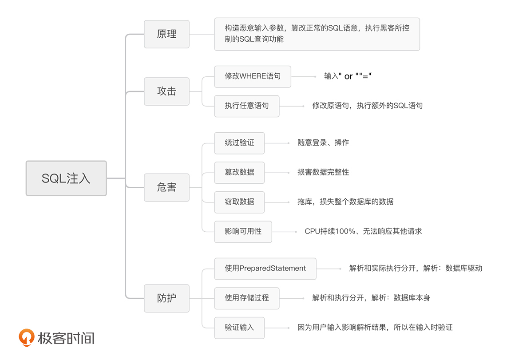

- 00 开篇词 别说你没被安全困扰过.md.html
- 01 安全的本质：数据被窃取后，你能意识到问题来源吗？.md.html
- 02 安全原则：我们应该如何上手解决安全问题？.md.html
- 03 密码学基础：如何让你的密码变得“不可见”？.md.html
- 04 身份认证：除了账号密码，我们还能怎么做身份认证？.md.html
- 05 访问控制：如何选取一个合适的数据保护方案？.md.html
- 06 XSS：当你“被发送”了一条微博时，到底发生了什么？.md.html
- 07 SQL注入：明明设置了强密码，为什么还会被别人登录？.md.html
- 08 CSRF_SSRF：为什么避免了XSS，还是“被发送”了一条微博？.md.html
- 09 反序列化漏洞：使用了编译型语言，为什么还是会被注入？.md.html
- 10 信息泄露：为什么黑客会知道你的代码逻辑？.md.html
- 11 插件漏洞：我的代码看起来很安全，为什么还会出现漏洞？.md.html
- 13 Linux系统安全：多人共用服务器，如何防止别人干“坏事”？.md.html
- 14 网络安全：和别人共用Wi-Fi时，你的信息会被窃取吗？.md.html
- 15 Docker安全：在虚拟的环境中，就不用考虑安全了吗？.md.html
- 16 数据库安全：数据库中的数据是如何被黑客拖取的？.md.html
- 17 分布式安全：上百个分布式节点，不会出现“内奸”吗？.md.html
- 18 安全标准和框架：怎样依“葫芦”画出好“瓢”？.md.html
- 19 防火墙：如何和黑客“划清界限”？.md.html
- 20 WAF：如何为漏洞百出的Web应用保驾护航？.md.html
- 21 IDS：当黑客绕过了防火墙，你该如何发现？.md.html
- 22 RASP：写规则写得烦了？尝试一下更底层的IDS.md.html
- 23 SIEM：一个人管理好几个安全工具，如何高效运营？.md.html
- 24 SDL：怎样才能写出更“安全”的代码？.md.html
- 25 业务安全体系：对比基础安全，业务安全有哪些不同？.md.html
- 26 产品安全方案：如何降低业务对黑灰产的诱惑？.md.html
- 27 风控系统：如何从海量业务数据中，挖掘黑灰产？.md.html
- 28 机器学习：如何教会机器识别黑灰产？.md.html
- 29 设备指纹：面对各种虚拟设备，如何进行对抗？.md.html
- 30 安全运营：“黑灰产”打了又来，如何正确处置？.md.html
- 加餐1 数据安全：如何防止内部员工泄露商业机密？.md.html
- 加餐2 前端安全：如何打造一个可信的前端环境？.md.html
- 加餐3 职业发展：应聘安全工程师，我需要注意什么？.md.html
- 加餐4 个人成长：学习安全，哪些资源我必须要知道？.md.html
- 加餐5 安全新技术：IoT、IPv6、区块链中的安全新问题.md.html
- 模块串讲（一）Web安全：如何评估用户数据和资产数据面临的威胁？.md.html
- 模块串讲（三）安全防御工具：如何选择和规划公司的安全防御体系？.md.html
- 模块串讲（二）Linux系统和应用安全：如何大范围提高平台安全性？.md.html
- 结束语 在与黑客的战役中，我们都是盟友！.md.html
- 捐赠
07 SQL注入：明明设置了强密码，为什么还会被别人登录？
你好，我是何为舟。
在上一讲中，我们介绍了XSS攻击。今天，我们来介绍另外一种常见的Web攻击：SQL注入。
在讲正文之前，让我们先来看一个案例。某天，当你在查看应用的管理后台时，发现有很多异常的操作。接着，你很快反应过来了，这应该是黑客成功登录了管理员账户。于是，你立刻找到管理员，责问他是不是设置了弱密码。管理员很无辜地表示，自己的密码非常复杂，不可能泄露，但是为了安全起见，他还是立即修改了当前的密码。奇怪的是，第二天，黑客还是能够继续登录管理员账号。问题来了，黑客究竟是怎么做到的呢？你觉得这里面的问题究竟出在哪里呢？你可以先自己思考一下，然后跟着我开始今天的学习！
SQL注入攻击是如何产生的？
在上一讲中，我们讲了，XSS是黑客通过篡改HTML代码，来插入并执行恶意脚本的一种攻击。其实，SQL注入和XSS攻击很类似，都是黑客通过篡改代码逻辑发起的攻击。那么，不同的点是什么？SQL注入到底是什么呢？
通常来说，我们会将应用的用户信息存储在数据库中。每次用户登录时，都会执行一个相应的SQL语句。这时，黑客会通过构造一些恶意的输入参数，在应用拼接SQL语句的时候，去篡改正常的SQL语意，从而执行黑客所控制的SQL查询功能。这个过程，就相当于黑客“注入”了一段SQL代码到应用中。这就是我们常说的SQL注入。
这么说可能还是有点理论，不够具体。接下来，我就以几个简单而又经典的示例，来给你介绍两种主要的SQL注入方式。
1.修改WHERE语句
我们先来看一个例子。现在有一个简单的登录页面，需要用户输入Username和Password这两个变量来完成登录。具体的Web后台代码如下所示：
uName = getRequestString("username");
uPass = getRequestString("password");
sql = 'SELECT * FROM Users WHERE Username ="' + uName + '" AND Password ="' + uPass + '"'
当用户提交一个表单（假设Username为admin，Password为123456）时，Web将执行下面这行代码：
SELECT * FROM Users WHERE Username ="admin" AND Password ="123456"
用户名密码如果正确的话，这句SQL就能够返回对应的用户信息；如果错误的话，不会返回任何信息。因此，只要返回的行数≥1，就说明验证通过，用户可以成功登录。
所以，当用户正常地输入自己的用户名和密码时，自然就可以成功登录应用。那黑客想要在不知道密码的情况下登录应用，他又会输入什么呢？他会输入 " or ""="。这时，应用的数据库就会执行下面这行代码：
SELECT * FROM Users WHERE Username ="" AND Password ="" or ""=""
我们可以看到，WHERE语句后面的判断是通过or进行拼接的，其中”“=”“的结果是true。那么，当有一个or是true的时候，最终结果就一定是true了。因此，这个WHERE语句是恒为真的，所以，数据库将返回全部的数据。
这样一来，我们就能解答文章开头的问题了，也就是说，黑客只需要在登录页面中输入 " or ""="，就可以在不知道密码的情况下，成功登录后台了。而这，也就是所谓的“万能密码”。而这个“万能密码”，其实就是通过修改WHERE语句，改变数据库的返回结果，实现无密码登录。
2.执行任意语句
除此之外，大部分的数据库都支持多语句执行。因此，黑客除了修改原本的WHERE语句之外，也可以在原语句的后面，插入额外的SQL语句，来实现任意的增删改查操作。在实际工作中，MySQL是最常用的数据库，我们就以它为例，来介绍一下，任意语句是如何执行的。
在MySQL中，实现任意语句执行最简单的方法，就是利用分号将原本的SQL语句进行分割。这样，我们就可以一次执行多个语句了。比如，下面这个语句在执行的时候会先插入一个行，然后再返回Users表中全部的数据。
INSERT INTO Users (Username, Password) VALUES("test","000000"); SELECT * FROM Users;
接下来，我们来看一个具体的例子。在用户完成登录后，应用通常会通过userId来获取对应的用户信息。其Web后台的代码如下所示：
uid = getRequestString("userId");
sql = "SELECT * FROM Users WHERE UserId = " + uid;
在这种情况下，黑客只要在传入的userId参数中加入一个分号，就可以执行任意的SQL语句了。比如，黑客想“删库跑路”的话，就令userId为 1;DROP TABLE Users，那么，后台实际执行的SQL就会变成下面这行代码，而数据库中所有的用户信息就都会被删除。
SELECT * FROM Users WHERE UserId = 1；DROP TABLE Users
SQL注入的“姿势”还有很多（比如：没有回显的盲注、基于INSERT语句的注入等等），它们的原理都是一样的，都是通过更改SQL的语义来执行黑客设定的SQL语句。如果你有兴趣，可以通过我前面给出的链接去进一步了解。
通过SQL注入攻击，黑客能做什么？
通过上面对SQL注入的简单介绍，我们已经知道，SQL注入会令Web后台执行非常规的SQL语句，从而导致各种各样的问题。那么通过SQL注入攻击，黑客究竟能够干些什么呢？下面我们就一一来看。
1.绕过验证
在上面的内容中，我们已经介绍过，" or ""=" 作为万能密码，可以让黑客在不知道密码的情况下，通过登录认证。因此，SQL注入最直接的利用方式，就是绕过验证，也就相当于身份认证被破解了。
2.任意篡改数据
除了绕过验证，我们在任意语句执行的部分中讲到，SQL注入漏洞导致黑客可以执行任意的SQL语句。因此，通过插入DML类的SQL语句（INSERT、UPDATE、DELETE、TRUNCATE、DROP等），黑客就可以对表数据甚至表结构进行更改，这样数据的完整性就会受到损害。比如上面例子中，黑客通过插入DROP TABLE Users，删除数据库中全部的用户。
3.窃取数据
在XSS漏洞中，黑客可以通过窃取Cookie和“钓鱼”获得用户的隐私数据。那么，在SQL注入中，黑客会怎么来获取这些隐私数据呢？
在各类安全事件中，我们经常听到“拖库”这个词。所谓“拖库”，就是指黑客通过类似SQL注入的手段，获取到数据库中的全部数据（如用户名、密码、手机号等隐私数据）。最简单的，黑客利用UNION关键词，将SQL语句拼接成下面这行代码之后，就可以直接获取全部的用户信息了。
SELECT * FROM Users WHERE UserId = 1 UNION SELECT * FROM Users
4.消耗资源
通过第1讲对CIA三元组的学习，我们知道，除了获取数据之外，影响服务可用性也是黑客的目标之一。
SQL注入破坏可用性十分简单，可以通过完全消耗服务器的资源来实现。比如，在Web后台中，黑客可以利用WHILE打造死循环操作，或者定义存储过程，触发一个无限迭代等等。在这些情况下，数据库服务器因为CPU被迅速打满，持续100%，而无法及时响应其他请求。
总结来说，通过SQL注入攻击，黑客可以绕过验证登录后台，非法篡改数据库中的数据；还能执行任意的SQL语句，盗取用户的隐私数据影响公司业务等等。所以，我认为，SQL注入相当于让黑客直接和服务端的数据库进行了交互。正如我们一直所说的，应用的本质是数据，黑客控制了数据库，也就相当于控制了整个应用。
如何进行SQL注入防护 ？
在认识到SQL注入的危害之后，我们知道，一个简单的SQL查询逻辑，能够带来巨大的安全隐患。因此，我们应该做到在开发过程中就避免出现SQL注入漏洞。那具体应该怎么做呢？接下来，我会为你介绍3种常见的防护方法，它们分别是：使用PreparedStatement、使用存储过程和验证输入。接下来，我们一一来看。
1.使用PreparedStatement
通过合理地使用PreparedStatement，我们就能够避免99.99%的SQL注入问题。你肯定很好奇，我为什么会这么说。接下来，让我们一起看一下它的实现过程。
当数据库在处理一个SQL命令的时候，大致可以分为两个步骤：
- 将SQL语句解析成数据库可使用的指令集。我们在使用EXPLAIN关键字分析SQL语句，就是干的这个事情；
- 将变量代入指令集，开始实际执行。之所以在批量处理SQL的时候能够提升性能，就是因为这样做避免了重复解析SQL的过程。
那么PreparedStatement为什么能够避免SQL注入的问题呢？
这是因为，SQL注入是在解析的过程中生效的，用户的输入会影响SQL解析的结果。因此，我们可以通过使用PreparedStatement，将SQL语句的解析和实际执行过程分开，只在执行的过程中代入用户的操作。这样一来，无论黑客提交的参数怎么变化，数据库都不会去执行额外的逻辑，也就避免了SQL注入的发生。
在Java中，我们可以通过执行下面的代码将解析和执行分开：
String sql = "SELECT * FROM Users WHERE UserId = ?";
PreparedStatement statement = connection.prepareStatement(sql);
statement.setInt(1, userId);
ResultSet results = statement.executeQuery();
为了实现相似的效果，在PHP中，我们可以使用PDO（PHP Data Objects）；在C#中，我们可以使用OleDbCommand等等。
这里有一点需要你注意，前面我们说了，通过合理地使用PreparedStatement就能解决99.99%的SQL注入问题，那到底怎么做才算“合理地”使用呢？
PreparedStatement为SQL语句的解析和执行提供了不同的“方法”，你需要分开来调用。但是，如果你在使用PreparedStatement的时候，还是通过字符串拼接来构造SQL语句，那仍然是将解析和执行放在了一块，也就不会产生相应的防护效果了。我这里给你展示了一个错误案例，你可以和上面的代码进行对比。
String sql = "SELECT * FROM Users WHERE UserId = " + userId;
PreparedStatement statement = connection.prepareStatement(sql);
ResultSet results = statement.executeQuery();
2.使用存储过程
接下来，我们说一说，如何使用存储过程来防止SQL注入。实际上，它的原理和使用PreparedStatement类似，都是通过将SQL语句的解析和执行过程分开，来实现防护。区别在于，存储过程防注入是将解析SQL的过程，由数据库驱动转移到了数据库本身。
还是上述的例子，使用存储过程，我们可以这样来实现：
delimiter $$ #将语句的结束符号从分号;临时改为两个$$(可以是自定义)
CREATE PROCEDURE select_user(IN p_id INTEGER)
BEGIN
SELECT * FROM Users WHERE UserId = p_id;
END$$
delimiter; #将语句的结束符号恢复为分号
call select_user(1);
3.验证输入
在上一节课中，我们讲过，防护的核心原则是，一切用户输入皆不可信。因此，SQL注入的防护手段和XSS其实也是相通的，主要的不同在于：
- SQL注入的攻击发生在输入的时候，因此，我们只能在输入的时候去进行防护和验证；
- 大部分数据库不提供针对SQL的编码，因为那会改变原有的语意，所以SQL注入没有编码的保护方案。
因此，对所有输入进行验证或者过滤操作，能够很大程度上避免SQL注入的出现。比如，在通过userId获取Users相关信息的示例中，我们可以确认userId必然是一个整数。因此，我们只需要对userId参数，进行一个整型转化（比如，Java中的Integer.parseInt，PHP的intval），就可以实现防护了。
当然，部分场景下，用户输入的参数会比较复杂。我们以用户发出的评论为例，其内容完全由用户定义，应用无法预判它的格式。这种情况下，应用只能通过对部分关键字符进行过滤，来避免SQL注入的发生。比如，在MySQL中，需要注意的关键词有” % ’ \ _。
这里我简单地总结一下，在实际使用这些防护方法时的注意点。对于验证输入来说，尤其是在复杂场景下的验证输入措施，其防护效果是最弱的。因此，避免SQL注入的防护方法，首要选择仍然是PreparedStatement或者存储过程。
总结
好了，这一节内容差不多了，下面我来带你总结回顾一下，你要掌握的重点内容。
SQL注入就是黑客通过相关漏洞，篡改SQL语句的攻击。通过SQL注入，黑客既可以影响正常的SQL执行结果，从而绕过验证，也可以执行额外的SQL语句，对数据的机密性、完整性和可用性都产生影响。
为了避免SQL注入的出现，我们需要正确地使用PreparedStatement方法或者存储过程，尽量避免在SQL语句中出现字符串拼接的操作。除此之外，SQL注入的防护也可以和XSS一样，对用户的输入进行验证、检测并过滤SQL中的关键词，从而避免原有语句被篡改。
今天的内容比较多，为了方便你记忆，我总结了一个知识脑图，你可以通过它来对今天的重点内容进行复习巩固。- 
思考题
好了，今天的内容差不多了，我们来看一道思考题。
假设有下面这样一个语句：
SELECT Username FROM Users WHERE UserId = 1
你现在已经知道，WHERE语句中存在了SQL注入的点。那么，我们怎么才能获取到除了Username之外的其他字段呢？这里我给你一个小提示，你可以先了解一下“盲注”这个概念，之后再来思考这个问题。
欢迎留言和我分享你的思考和疑惑，也欢迎你把文章分享给你的朋友。我们下一讲再见！
© 2019 - 2023 Liangliang Lee. Powered by gin and hexo-theme-book.